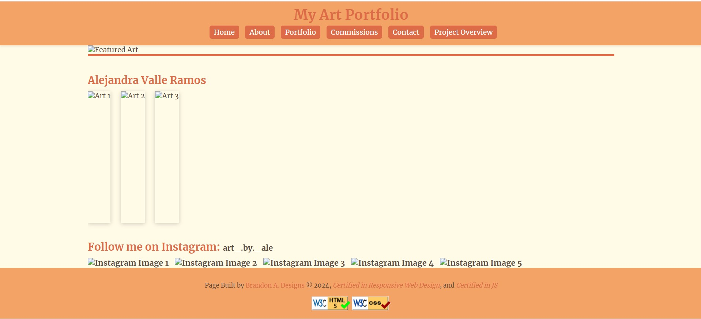

Peer Review: Brandon Aguilar
- Homepage - Project correctly starts with index.html inside of the projects folder.
- Spaces / upper-cases in file / folder names - No spaces or upper-case in file names.
- Design
- Contrast / sizing - Text appears to contrasts decently well against background. However, the h1 at the top and the links in the footer may not contrast enough. I am able to read them but I can't tell if accumulus would bring this up or not because accumulus is not present.
- Color and font using CSS - Project correctly uses .css file to decorate.
- CRAP:
- Contrast - There is contrast but as mentioned earlier, maybe more contrast for the h1 and links in the footer is needed.
- Repetition - Different pages use the same theme and feel like they a part of the same site.
- Alignment - All pages follow a grid like structure and are centered in the viewport except for the home page. This may only be happening because of the images not loading correctly.
- Proximity - Images, text, and links are all properly spaced away from eachother. Text is easy to read and content is easy to digest.
- Page Has:
- Header - All pages include a header element within the body.
- Main - All pages include a main element within the body.
- Footer - All pages include a footer element within the body.
- Nav - All pages include working nav bar with adequate spacing between links.
- Header with site / brand and h1 - All pages have a h1 element with the site / brand name.
- Main with h2 - Main includes h2 element and not h1 for all pages. H2 element uncludes page name.
- Footer with user pages - All pages include footer with correct links except for "Brandon A. Designs" which currently has a broken link.
- Specific requirements:
- Page includes functional html, css, and js. Some of the images fail to load however.
- Page meets the minimum of 5 pages.
- CSS file has only what is used.
- All pages have a working nav bar.
- Reccomendations:
- Most of the photos fail to load. At least on my end. Further troubleshooting may be required on your end.
- The commisions and contact forms are very similar and having both may be redundant.
- Accumulus does not appear to be present on any of the project pages.
- The link to your project overview page works but fails to load the css onced clicked on.
- Noteworthy mentions - The animations on the portfolio page are very cool!